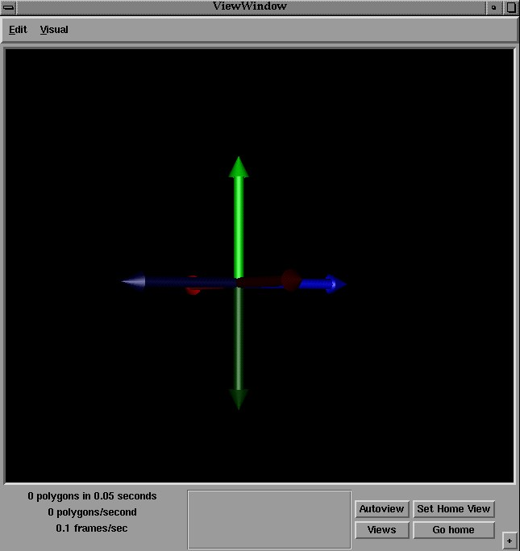
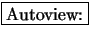
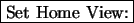
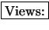
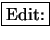
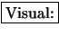
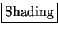
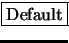

Next: 6. Packages
Up: No Title
Previous: 4. Working with Networks
Subsections
5. Visualization with the Viewer
This section describes perhaps the most frequently used module of SCIRun,
the Viewer, which has the task of displaying interactive graphical
output to the computer screen. You will use the Viewer any time you
wish to see a geometry, or spatial data. More important for the
computational steering (described in Computational
Steering), is that the Viewer provides access to
many simulation parameters and controls and thus indirectly initiates new
iterations of the simulation steps.
We begin with an overview of the Viewer window and its controls, then
describe in detail all the options and variations.
5.1 Anatomy of the Viewer window
The Viewer window contains two main areas, the upper portion, called the
Graphics window, which displays the graphics, and the lower portion,
where most of the control buttons are. Figure 5
contains an example of a Viewer window. In the Graphics
window, control is mostly by means of the mouse, mouse buttons, and various
modifier keys (shift/control/alt). In the lower window are a lot of
buttons and sliders, the function of which will become clear when you read
this manual.
Figure 5:
The default Viewer window in SCIRun
|  |
First, try out the controls for the Graphics window by moving the mouse
to the center of the viewer window and clicking and holding the left button
and then dragging the mouse. The objects should translate along with the
mouse. Do the same operation with the middle mouse button and the objects
will rotate around a point in the center of the display. The right mouse
button controls the scale of the display, zooming in when the mouse moves
downward or to the right. See Mouse Control in the
Viewer for all the gory details on mouse control.
The controls visible along the bottom of the Viewer window set some basic
configurations as follows:
-

- restores the display back to a default
condition, very useful when some combination of settings results in
the objects disappearing from the view window.
-

- captures the setting of the current view
so you
can return to it later by clicking the ``Go home'' button.
-

- restore the current home view.
-

- lists a number of standard viewing angles and
orientations. The view directions align with the Cartesian axes
of the objects and the ``Up vector'' choice sets the orientation of
the objects when viewed along the selected axis.
In the left corner of the control panel of the Viewer window are
performance indicators that document the current rendering speed for the
display. The better the graphics performance of the workstation you
have, the higher the drawing rate.
In the lower right corner of the Viewer window is a small plus sign
(``+''). Clicking on this reveals the extended control panel with controls
that we will describe in detail in Extended control window.
At the top of the Viewer window are two pull-down menus.
-

- provides access to controls for the background
color for the window, as well as the clipping planes (requires the
``Use Clip'' control to be selected in the extended controls
described in Extended control window).
-

- allows you to select between different graphics
hardware settings that are available on your workstation. The list
is ordered heuristically from most to least useful.
5.2 Mouse control in the Viewer window
The mouse controls within SCIRun are extensive and flexible. The resulting
action depends on the choice of mouse button, any simultaneous control
keys, and the way the mouse moves. The description in
Tables 2 and 3 below may seem overly
complicated at first, but with a little playing, it becomes intuitive
(another way of saying you will learn it if you use it enough).
Table 2:
Mouse controls for the Viewer
| Mouse Controls |
| Control Key |
Button |
Action |
| None |
Left |
Translate scene |
| |
Middle |
Rotate scene about its center on an arc
ball that surrounds it; rotation direction is a function of the
initial mouse location so try different sites and note the
response. |
| |
Right |
Zoom or scale scene (downwards and to the right increases
size, upwards or to the left decreases size) |
| Shift |
Left |
Select and move a widget in the display |
| |
Middle |
Toggle through the modes for a widget |
| |
Right |
Pop up a widget information window |
| Control |
Left |
Translate in the Z-direction, i.e., zoom in and out of the
screen (down moves closer, up further away). Moving left and
right increases the ``throttle'' of the Z-direction motion. If
the cursor is over a point on an object when clicked, this point
becomes the center of the screen for translation. |
| |
Middle |
Rotate the camera view about the eye point (using arcball
motion). |
| |
Right |
Unicam movement (see next table) |
|
Table 3:
Autocam mouse controls in the Viewer
| Unicam movement (Control key and right mouse
button |
| Initial mouse location |
Action |
|
| Near edge of display |
Rotate objects on the arc ball |
|
| Near the objects |
Following behavior: |
|
| |
Initial mouse movement |
Action |
| |
Horizontal |
Pan objects |
| |
Vertical |
Zoom and pan: down = zoom in, up = zoom
out, left and right= pan left and right) |
| |
None |
Set rotation point for subsequent arc ball rotation. |
|
5.3 Extended control window
Click on the ``+'' sign in the lower right corner of the default
Viewer window, and the window expands to reveal an extended panel of
control buttons, as shown in Figure 6. Click on the
``-'' sign that now replaces the ``+'' and this extended panel disappears
again. Here we describe the control options available in the extended
control window.
Figure 6:
The lower portion of extended
Viewer window in SCIRun
 |
The lower portion of the extended Viewer window is divided into three
columns and the middle of these contains a list of all the objects in the
display. If the list becomes long enough, a scroll bar on the left
hand side controls which are visible. For each entry in the list, we have
the following controls, reading from left to right:
- At the left end of each of the
objects in the list is box that displays red when that object is
selected. The Viewer window only displays those objects that
are selected.
- Next comes the name of the object.
- The

control box that comes next determines the
shading options that will be used for rendering the object.
Options include: Lighting, BBox, Fog, Use Clip, Back Cull, and
Display List (for descriptions, see
Rendering controls).
- As the right end of each entry is the lighting control, initially
marked
.
In the Default setting, the common
rendering controls described in Rendering
controls below apply. Clicking this box
reveals a set of options that will apply only to this object that
include Wire, Flat and Gouraud.
5.3.2 Rendering controls
The left column of the extended Viewer window contains controls that
apply to all of the selected objects with ``Default'' lighting selected.
Those without the Default setting will use their own, object specific
settings, as described in the previous section. The lighting and shading
options available are:
- Lighting:
- toggles whether or not the Viewer applies lighting
to the display. Objects without lighting have a constant
color.
- Fog:
- draws objects with variable intensity based on their
distance from the user, also known as ``depth cueing''. Close
objects appear brighter while more remote objects fade gradually
into the background as a function of distance from the front.
- BBox:
- toggles whether the Viewer draws the selected objects
in full detail or as a simple bounding box.
- Use Clip:
- applies up to six clipping planes to the display.
To control the clipping plane locations, use the
``Edit -> Clipping Planes'' menu at the top.
- Back Cull:
- displays only the forward facing facets of any surface
objects in the display.
- Display List:
- cache the list of objects to be displayed; this
option accelerates rendering when the content of the display does
not change.
- Shading:
- selects the type of shading for objects from the
following options:
- Wire:
- show only the wire mesh of objects.
- Flat:
- draw each facet with a constant color.
- Gouraud:
- linearly interpolate the color across facets.
The right hand column of the extended Viewer window contains controls
for displaying the axes and creating stereoscopic rendering.
requires hardware LCD glasses synchronized
with the display so that visibility for each eye coincides with the
display of the appropriate view. The ``Fusion Scale'' control provides a
means of setting the eye separation and thus setting the view that is most
suited to facial anatomy and distance from the screen.
5.3.3 Making movies
The Viewer window in SCIRun has simple controls for capturing sequences
of images into animations or movies. Here we describe how this works.
In the left column of the extended Viewer window are controls for
selecting movie type and then initiating and stopping the acquisition of
individual frames in the movie.
SCIRun sends a frame to the movie after each ``redraw'' operation, i.e.,
each time anything moves in the display or any visualization parameter
changes. If the MPEG package is available (See the
Installation Manual
for
details) then an option will be available for saving the animations as MPEG
movies.
There is also a button that forces the size of the graphical window to be
352x240 pixels in size, which is a standard format well suited to MPEG.
5.4 Control widgets
While the mouse controls describe many ways to interact with the contents
of the Viewer, SR also supports some powerful display widgets.
Examples of widgets capabilities include managing cutting surfaces colored
according to the local data values, displaying streamlines in vector
fields, or selecting sub-volumes within the display area for further
manipulation.
We have tried to make interacting with these widgets as consistent as
possible so that, for example, controlling parameters is usually by clicking
and dragging on either a cylindrical ``collar'' or a sphere element of the
widget. The original design of these modules was by James Purcifal
Note that a single widget may have more than one purpose
depending on the context in which it exists.
In this section, we describe the widgets available within SCIRun and BioPSE.
The same widget may, for example, select a clipping or a display plane
through a three-dimensional object but may also set the seed points for a
streamline module.
5.4.1 Gauge Widget
Figure 7:
The gauge widget for setting location and
density of seed points
 |
The Gauge Widget consists of two spheres (A)
connected by a cylinder (B) with a small slider collar (C) on the cylinder.
There are also small resize cylinders extending from the spheres (D).
The primary use of the Gauge Widget is to set the
location and density of streamlines emerging from the long cylinder. It
may also be used as a more general purpose three-dimensional slider or as a
source for a stream surface.
Clicking and dragging either sphere causes the
entire widget to move in space, rotating about the other sphere and
following along behind the selected sphere. Dragging either of the resize
cylinders cases the size of the widget to change and dragging any point on
the main cylinder moves the whole widget without any change in orientation.
Dragging the slider collar changes the associated value, typically the
density of seed points for a streamline source.
5.4.2 Frame Widget
Figure 8:
The frame widget for selecting
cutting/projection planes
 |
The Frame Widget consists of four cylinders
connected in a rectangle. In the middle of each of the cylinders there is
a sphere (B), from which a resize cylinder extends (C).
The primary uses of the Frame Widget is for image
plane definition, for defining stream volumes, and as a "tie dye" as with
the Ring Widget described in Ring Widget.
Clicking and ragging a sphere on the widget will
cause the widget to rotate about it center; dragging on a resize cylinder
will move the associated edge and this extend or contract the rectangle.
Dragging any of the cylinder will drag the entire widget through space.
5.4.3 Box Widget
Figure 9:
The boxwidget for selecting sub-volumes
 |
The Box Widget consists of twelve cylinders (A)
connected in a hexahedral box (three-dimensional rectangle) with cylinders
indicating on the edges of the box (B). In the middle of each face of the
box is a sphere with a cylinder protruding from it (C) that provide resize
control.
The primary use of the Box Widget is to select a
subvolume of the workspace for further manipulation (e.g., volume
rendering, isosurfaces, streamlines, mesh adaption) where the faces of the
widget act as orthogonal clipping planes.
Clicking and dragging on one of the spheres rotates
the widget about its center without changing the position of the center.
Clicking on and dragging any resize handle
causes the associated face to extend without changing its orientation.
Dragging a cylinder causes the entire widget to move without changing its
orientation.
5.4.4 Ring Widget
Figure 10:
The ring widget for selecting
cutting/projection planes
 |
The Ring Widget consists of a ring (A) with four
embedded spheres (B), each with a resize cylindrical attached (D). Between
two of the spheres is a sliding collar (C). One of the resize cylinders
has a special material property (typically a different color from the other
cylinders) to indicate that it is the ``halfway point'' for the slider (E).
The primary use of the Ring Widget is to set the
density of streamlines emerging from the ring--the ring serves as a set of
seed points from which will emerge streamlines. The Ring Widget can also
serve as a three-dimensional angle gauge, as a source for multiple
streamlines throughout its surface, as a source for a stream surface from
the outer ring, and as a source for a stream volume. Another use is as a
color sheet, or ``tie dye'', in which the surface is colored as a function of
the scalar value of the field at each point.
Clicking and dragging the slider collar along the
ring changes the density of the seed points or some other related
parameter. Dragging the spheres controls the orientation of the Ring
Widget, while moving the resize cylinders changes the radius of the Ring
Widget about its center. Dragging any other point on the ring moves the
ring in space without changing its radius or orientation.
Next: 6. Packages
Up: No Title
Previous: 4. Working with Networks
Rob MacLeod
2001-11-03